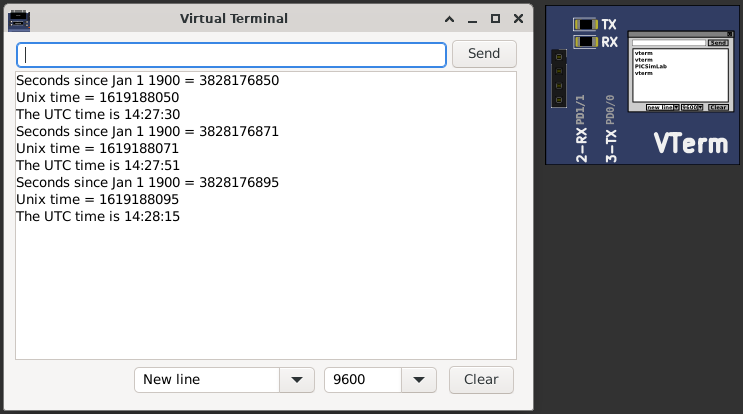

10.4.2 IO Virtual Term
This part is a virtual serial terminal. This part can be used to read and write RX/TX pins UART signals. This part don’t need the use or install of virtual serial ports on computer. Clik on terminal picture to open the terminal window.
